About
I simulate the physical world with computers and use those simulations to design and optimize useful things. My focus is differentiable simulation: writing physics solvers that compute not just what a given device does, but a map of how every design parameter affects it. You can use that map to optimize your hardware over millions of parameters, but also to analyze it, make it more robust, or improve your models of it.
I'm currently a Technical Fellow at Flexcompute Inc., building our multiphysics intelligence platform across AI infrastructure, platform architecture, and agentic simulation interfaces. I spend much of my time hands-on, putting AI agents in the loop with real physics solvers to see how far the two can go together. I'm drawn to the boundary where AI learns about and reasons over the physical world, both as a way to accelerate science and as a rich domain for fundamental AI research.
Before that, as Head of Photonics, I led the development of our electromagnetic simulation products. I was one of Flexcompute's first employees and spent years in the weeds building Tidy3D, our open-source framework for cloud-based, GPU-accelerated electromagnetic simulation: its data model, its Python client, and its look and feel. It grew from a moonshot prototype into an established product used widely across the industry. My deepest technical contribution was its automatic differentiation engine, which differentiates through a full 3D Maxwell's equations solve on a cloud GPU cluster and gets the whole gradient from one additional (adjoint) simulation. It works with autograd, JAX, and PyTorch.
Before Flexcompute, I completed my PhD in Applied Physics at Stanford, advised by Prof. Shanhui Fan. My PhD work established some deep connections between physics and computation: I showed that wave physics can perform computation like a recurrent neural network, proposed and experimentally demonstrated backpropagation implemented in light signals for training optical neural networks, developed mathematical methods for gradient-based design in photonics, and created several open source solvers and design packages for simulation.
I studied physics at the University of Michigan and now live in New York City. When I'm not building things I'm usually traveling, cooking, or running around Central Park.
Experience
Flexcompute
2019 – present
- Research Scientist2019
- Principal Scientist2024
- Head of Photonics2025
- Technical Fellow2026
One of the first employees. Built Tidy3D's Python API, data model, product design, and automatic differentiation engine, taking it from prototype to a product used across the industry. As Head of Photonics, led the development of our electromagnetic simulation products. Now leading company-wide work on AI infrastructure, platform architecture, and moonshot research, including how customers and their AI agents connect to our solvers.
Stanford University · PhD, Applied Physics
2014 – 2019
Photonic hardware for machine learning, electromagnetic inverse design, and laser-driven particle accelerators on a chip. Advisor: Shanhui Fan.
Rasa · Machine Learning Intern
Summer 2018
Open-source conversational AI: natural language understanding.
Full-stack development of inventory management software.
National University of Singapore, Centre for Quantum Technologies
2013
Surface ion trapping for quantum information processing. Advisor: Manas Mukherjee.
University of Michigan, Optoelectronic Components and Materials
2010 – 2013
Wafer reuse for low-cost, thin-film III–V photovoltaic devices. Advisor: Stephen Forrest.
University of Michigan · BS Physics
2009 – 2013
Writing
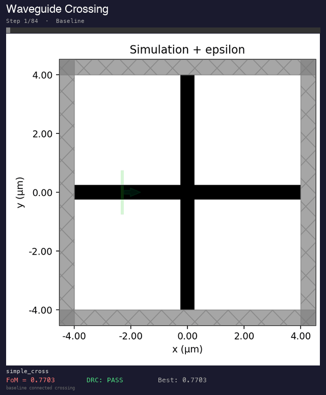
Can AI Agents Autonomously Design Components on Photonic Chips?
→
AI agents equipped with an electromagnetic simulator and design rule checker tackle photonic component design (waveguide bends, crossings, splitters, and demultiplexers) through iterative simulation and optimization. Explores where agentic AI excels and where it hits the limits of parametric search.
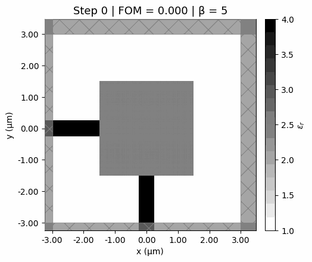
Designing a Photonic Chip Component with ~45 Lines of Python
→
A compact introduction to photonic inverse design using Tidy3D. Combining electromagnetic simulation with the adjoint method, a simple 10-iteration optimization loop discovers a waveguide bend achieving ~89% power transmission through a 90° corner.
Selected Publications
Latest
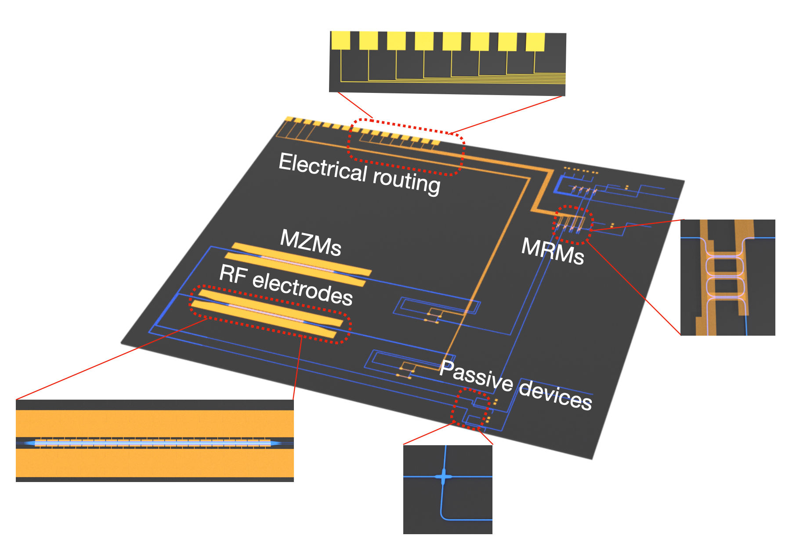
arXiv (2026)
Autonomous agentic design for photonics
We task large language models with solving photonic design problems, giving agents access to electromagnetic simulation tools and quantitative acceptance criteria (fabrication rules, geometric and physical-consistency checks). The agents run autonomous design loops (propose, simulate, evaluate, iterate) to produce devices with state-of-the-art performance across passive components (waveguide bends, splitters, crossings), an active silicon microring modulator, and the RF traveling-wave electrodes of a Mach-Zehnder modulator.
First & Co-First Author
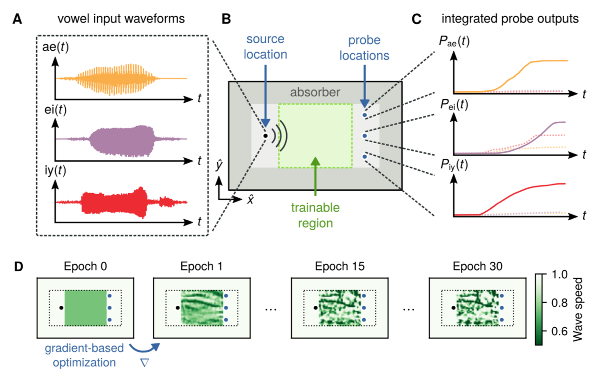
Science Advances (2019)
Wave Physics as an Analog Recurrent Neural Network
We show that wave-based physical systems map exactly to the mathematics of recurrent neural networks. Using this correspondence, wave systems can be trained to passively perform machine learning tasks on sequential data (raw audio, optical signals) using only wave propagation through a structure.
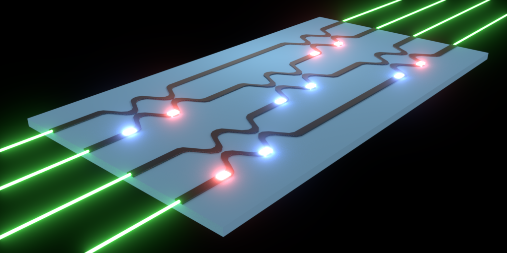
Optica (2018)
Training of Photonic Neural Networks through In-Situ Backpropagation and Gradient Measurement
We introduce a method for measuring adjoint sensitivity directly as an intensity measurement in a photonic device, allowing the backpropagation algorithm to be physically implemented using optical signals. This enables efficient in-situ training of artificial neural networks built from integrated photonic circuits.
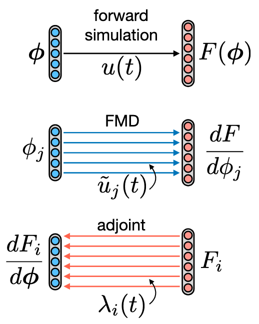
ACS Photonics (2019)
Forward-Mode Differentiation of Maxwell's Equations
Differentiating electromagnetic simulations is useful for photonic device design, optimization, and sensitivity analysis. We provide a method for computing exact derivatives of Maxwell's Equations based on forward-mode differentiation, complementing the adjoint (reverse-mode) approach.
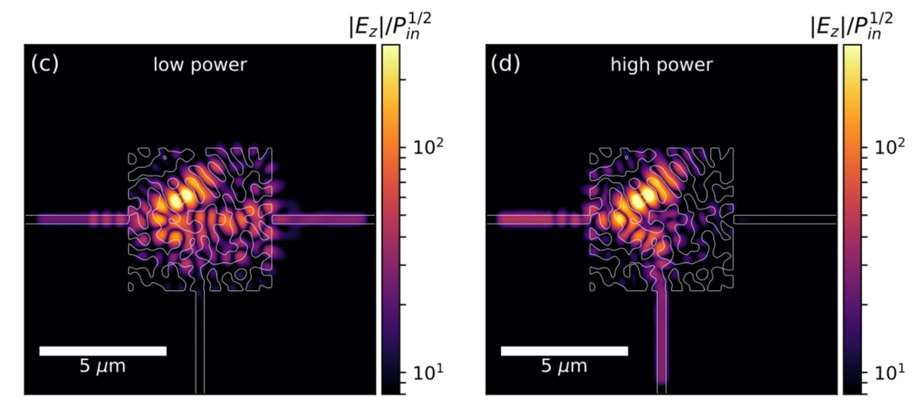
ACS Photonics (2018)
Adjoint Method and Inverse Design for Nonlinear Nanophotonic Devices
We extend adjoint-based gradient computation to the frequency-domain analysis of nonlinear optical devices, enabling efficient large-scale inverse design with respect to many design degrees of freedom simultaneously. Demonstrated on photonic power switches.
Co-authored
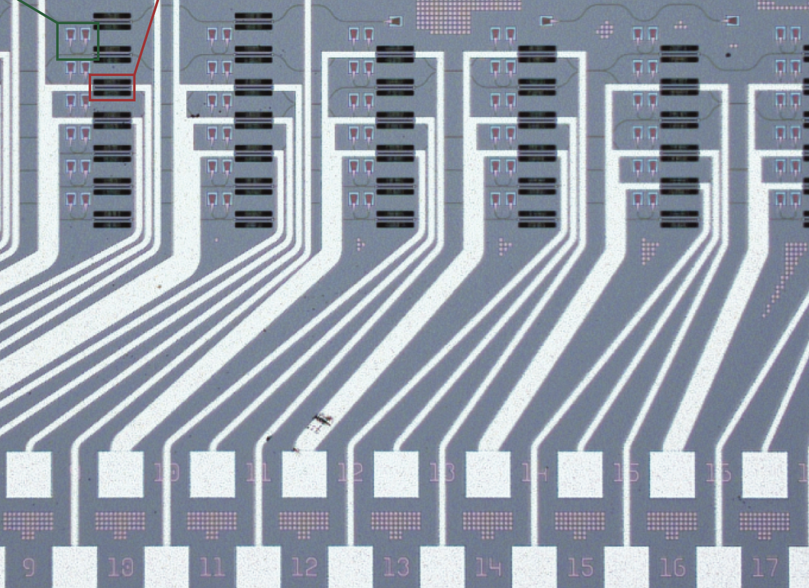
Science (2023)
Experimentally realized in situ backpropagation for deep learning in photonic neural networks
Experimental confirmation of the in-situ optical backpropagation method I introduced theoretically in 2018. Collaborators built an integrated optical circuit implementing a photonic neural network and measured gradients of a machine learning task using interference between optical signals.
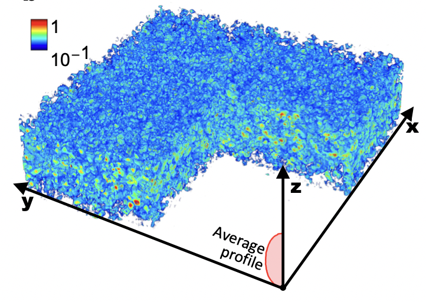
Nature Physics (2023)
Anderson localization of electromagnetic waves in three dimensions
In this work, we used our electromagnetic simulator to observe direct evidence of Anderson localization in 3D optical systems for the first time, settling a long-standing debate in the physics community. This work required thousands of simulations of light scattering in extremely large ensembles of random spheres to gather statistics to back up these claims.
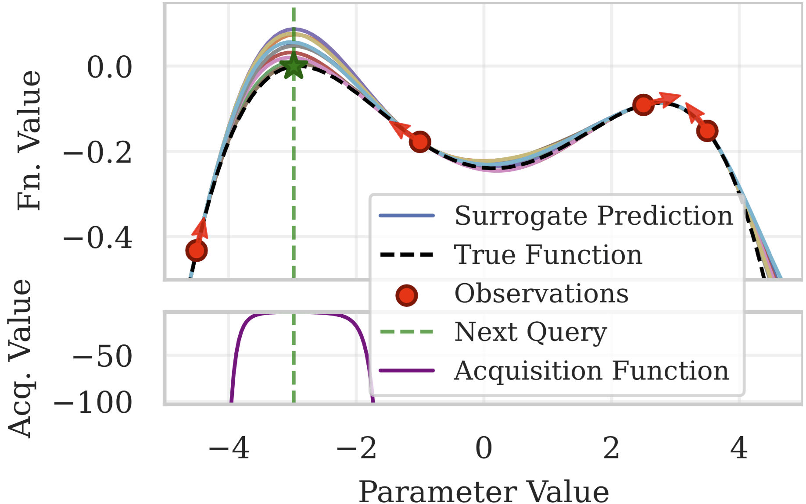
Optics Express (2026)
Gradient-informed Bayesian and interior point optimization for efficient inverse design in nanophotonics
We introduce BONNI, which combines Bayesian optimization with neural-network ensemble surrogates and interior-point optimization, efficiently incorporating gradient information to improve global inverse design. The method outperforms standard optimizers on nanophotonic problems including distributed Bragg reflectors and dual-layer grating couplers.
More First-Author
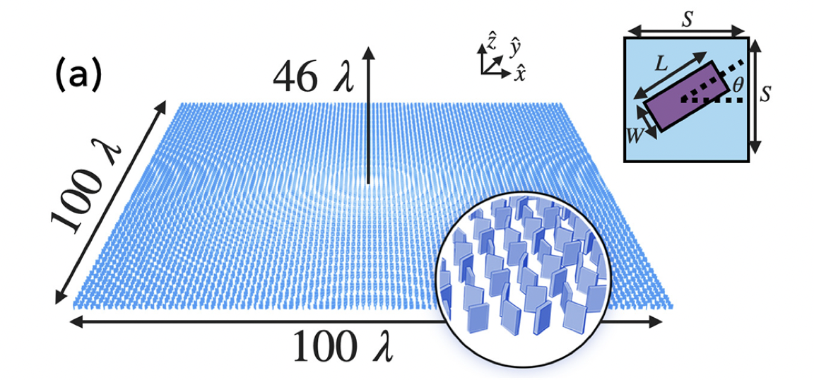
Applied Physics Letters (2021)
A perspective on the pathway toward full wave simulation of large area metalenses
We used Tidy3D to demonstrate full-wave simulation of a metalens with a diameter of hundreds of wavelengths. We argue that brute-force full-accuracy simulation provides a viable and increasingly practical pathway toward metalens design.
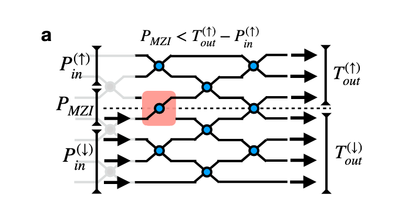
Physical Review Applied (2019)
Reconfigurable Photonic Circuit for Controlled Power Delivery to Laser-Driven Accelerators on a Chip
We present a system for automatic control of laser power to an accelerator on a chip using a mesh of Mach-Zehnder interferometers that can be sequentially tuned to optimize power distribution.
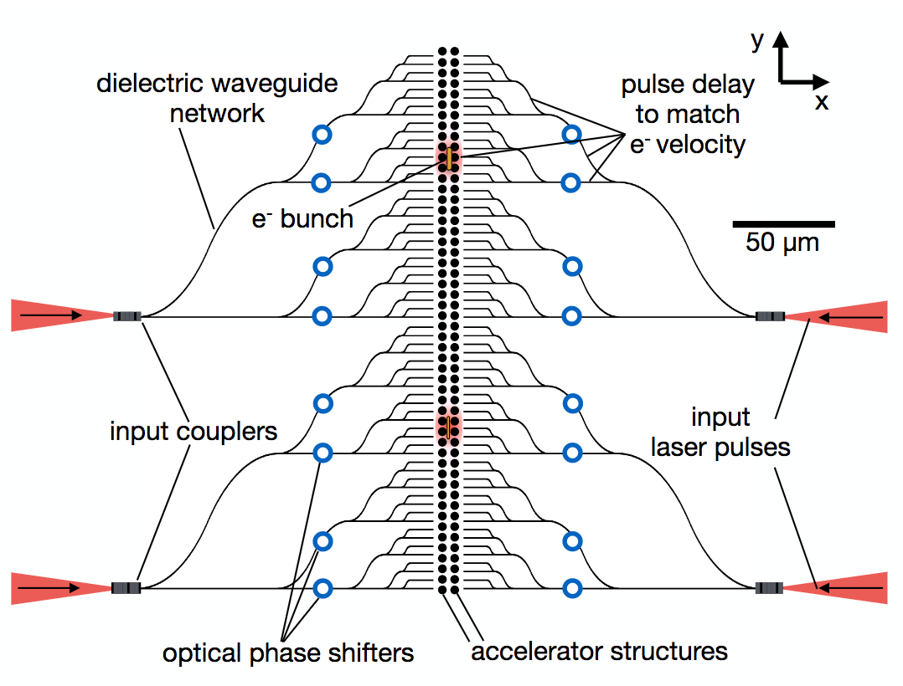
Physical Review Applied (2018)
On-Chip Laser Power Delivery System for Dielectric Laser Accelerators
We propose an integrated dielectric waveguide system for driving particle accelerators on a chip, providing a scalable path to larger energy gains and enabling practical applications of on-chip acceleration.
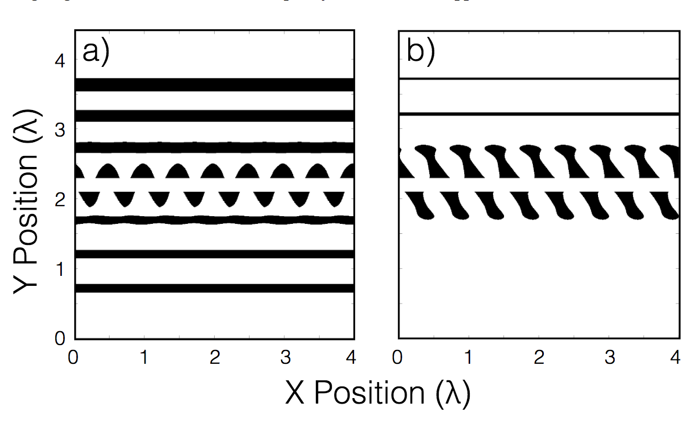
Optics Express (2017)
Method for Computationally Efficient Design of Dielectric Laser Accelerator Structures
We show how to systematically inverse design a dielectric accelerator structure using the adjoint method, showing an equivalence between maximizing particle energy gain and maximizing electron radiation.
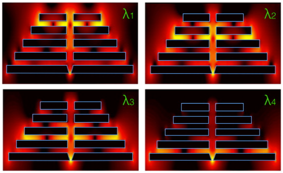
Nano Letters (2016)
Plasmonic Circuit Theory for Multiresonant Light Funneling to a Single Spatial Location
By modeling metallic nanostructures as electronic circuits, we systematically design them to focus light at the same position for multiple independently tunable frequencies, with applications in spectroscopy and biological sensing.
More co-authored
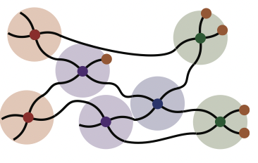
IEEE JSTQE (2020)
Parallel programming of an arbitrary feedforward photonic network
We introduced a graph-topological approach that generalizes feedforward photonic networks, with an algorithm enabling efficient programming to implement arbitrary linear operations on demand.
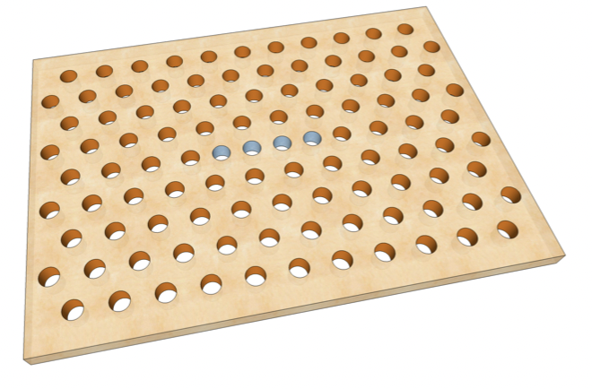
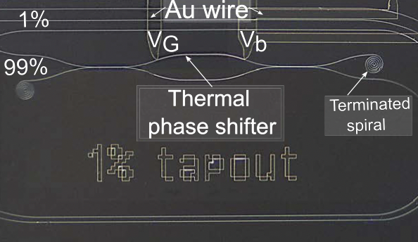
Optics Express (2020)
Experimental realization of arbitrary activation functions for optical neural networks
Experimental demonstration of an on-chip electro-optic circuit realizing arbitrary nonlinear activation functions for optical neural networks.
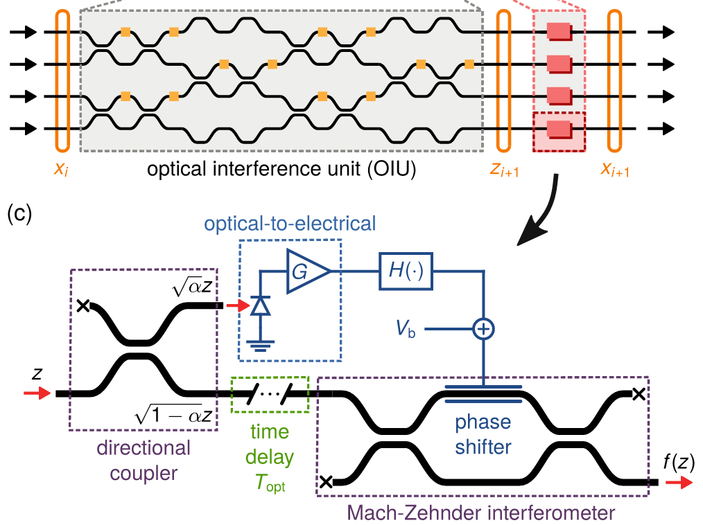
IEEE JSTQE, Invited (2019)
Reprogrammable Electro-Optic Nonlinear Activation Functions for Optical Neural Networks
We propose a hybrid electro-optic circuit enabling nonlinear activation functions at low optical power, with an open-source ONN simulator demonstrating performance on standard ML tasks.
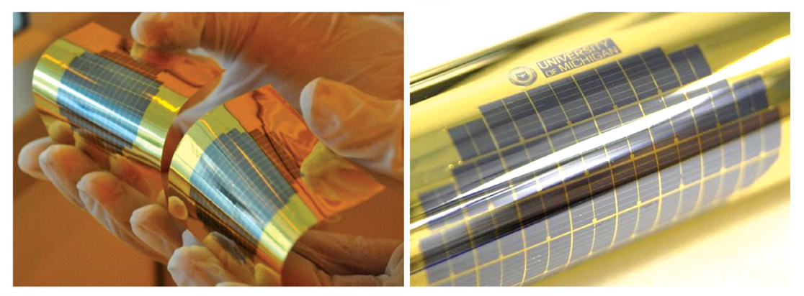
Advanced Functional Materials (2014)
Non-Destructive Wafer Recycling for Low-Cost Thin-Film Flexible Optoelectronics
Demonstration of thin-film III-V device fabrication by lifting off the active region and reusing the substrate, dramatically reducing cost for high-performance photovoltaics.
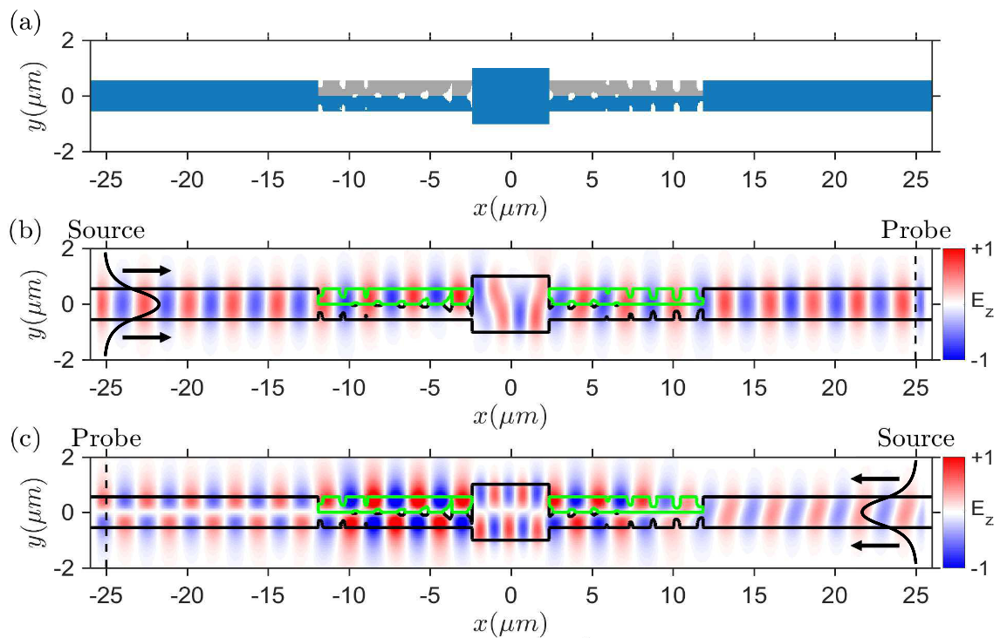
Optics Express (2018)
Adjoint-Based Optimization of Active Nanophotonic Devices
We show how the adjoint method may be used to inverse design periodically modulated optical devices. Our approach is based upon the multi-frequency finite-difference frequency-domain method. As a demonstration, we numerically design and optimize a compact optical isolator.
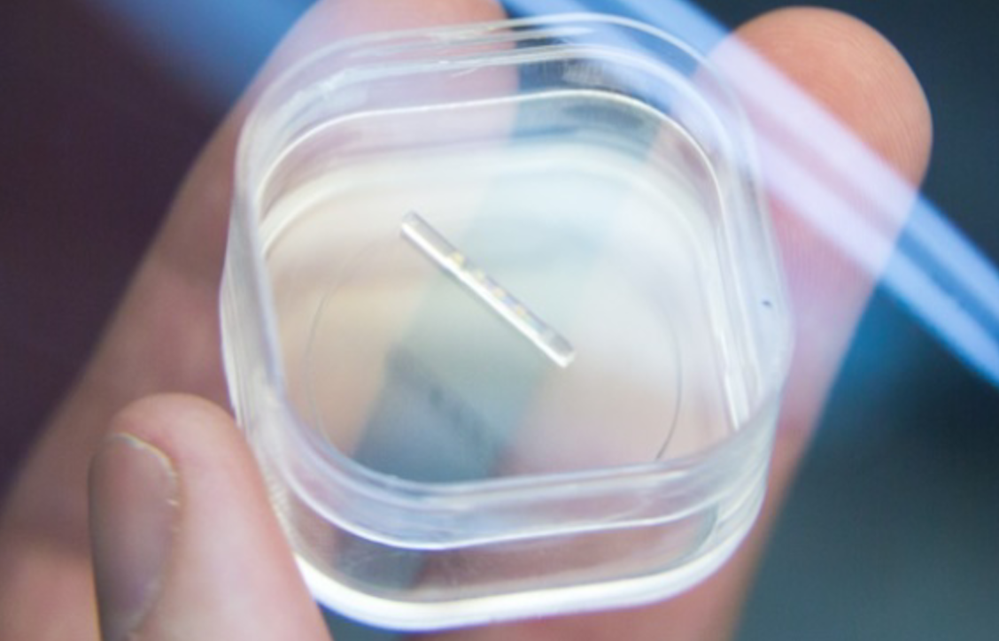
IPAC (2017)
Towards a Fully Integrated Accelerator on a Chip: Dielectric Laser Acceleration (DLA) From the Source to Relativistic Electrons
We discuss steps towards building a fully functional laser-driven particle accelerator on a chip, including a systematic overview of all necessary components and recent advances.
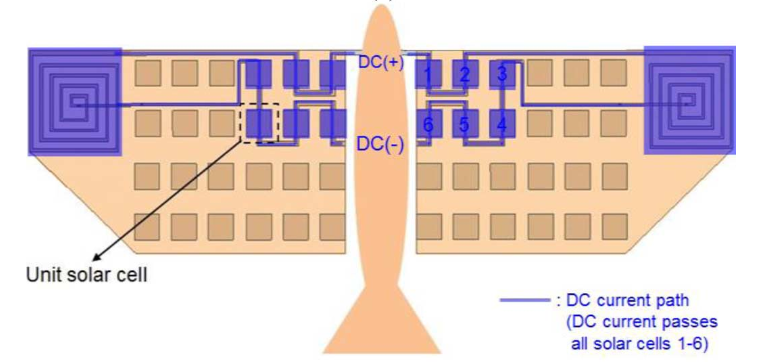
IEEE TAP (2014)
Flexible Antenna Integrated With an Epitaxial Lift-Off Solar Cell Array for Flapping-Wing Robots
To demonstrate the applications of lightweight, thin film optoelectronic devices, we integrate a flying robot with thin-film, III-V photovoltaics, which are used for both power and wireless communication.
Talks & patents
Selected talks
Building the future of photonic design with machine learning
Hardware-accelerated FDTD for large-scale electrodynamics
Training of photonic neural networks through in situ backpropagation
Patents
2023
Efficient Analog Backpropagation Training Architecture for Photonic Neural Networks
2022
Simultaneous Measurements of Gradients in Optical Networks
2022
Training Wave-Based Physical Systems as Recurrent Neural Networks
2022
Systems and Methods for Activation Functions for Photonic Neural Networks
2021
Training of Photonic Neural Networks Through In Situ Backpropagation
Open Source
Author
GPU-accelerated 3D Maxwell's equations solver with a Python client, cloud execution, and full automatic differentiation support for gradient-based inverse design.
Differentiable frequency-domain electromagnetic simulation (FDFD). Computes exact gradients of Maxwell's equations with forward- and reverse-mode automatic differentiation, built on autograd.
Adjoint-based inverse design tool for nonlinear nanophotonic devices. Extends the adjoint method to frequency-domain nonlinear optics for gradient-based optimization of photonic structures.
Contributor
Wave-based analog recurrent neural network simulator and trainer. Implements the wave physics / RNN correspondence, enabling physical systems to be trained on sequential data tasks.
Simulation framework for optical neural networks built from integrated photonic circuits.
Side projects
Things I build outside work.
A software twin of the Roland S-1 synthesizer: play it in the browser, and it learns any sound by gradient descent through a differentiable model of the synth. The code is on GitHub.
Learn jazz changes by playing them: it names every chord you hold, drills jazz progressions in all 12 keys, and walks you through a tune's changes until you know them by heart. Play a MIDI keyboard or your computer keys in the browser, through the S-1 twin if you like. The code is on GitHub.
Right-click any YouTube video and get the point in 30 seconds, then chat with its transcript. A Chrome extension and a tiny helper on your Mac that run on your own Claude plan: no API key, no server. Videos with no captions get transcribed locally with Whisper.
Film your pickleball game, tap MARK on the great points, and DinkReel cuts a highlight reel on your iPhone. No upload, no account, no waiting. It's on the App Store.
List 5, keep 2, pick 1: a tiny two-person decision ritual. Each turn travels as a link you text each other; there is no backend.